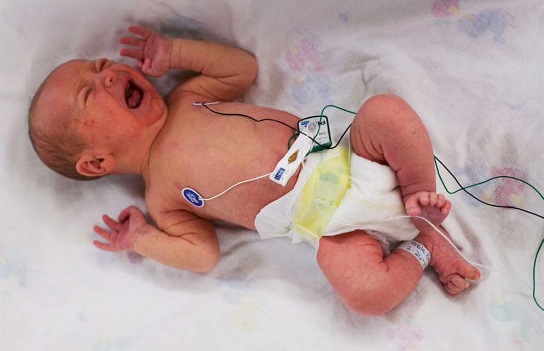
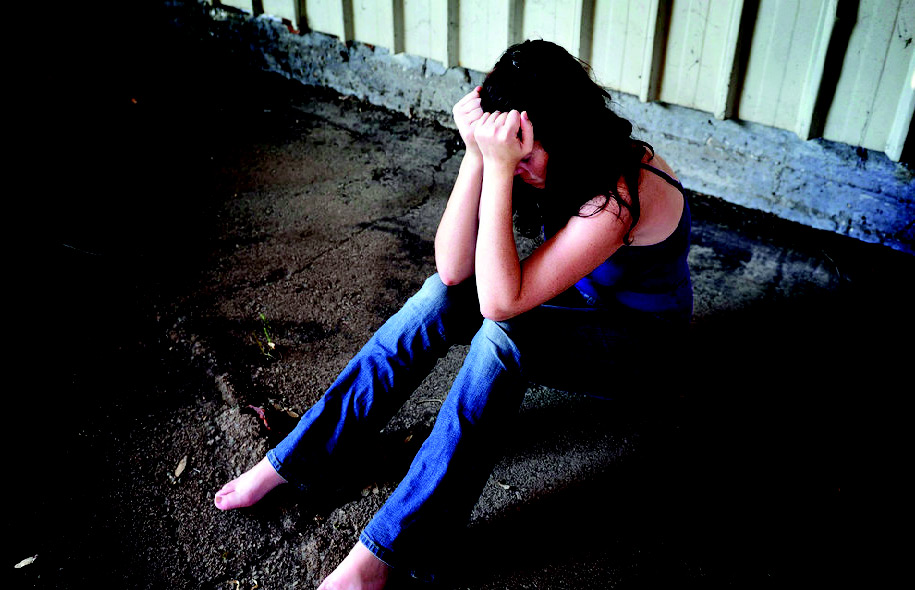
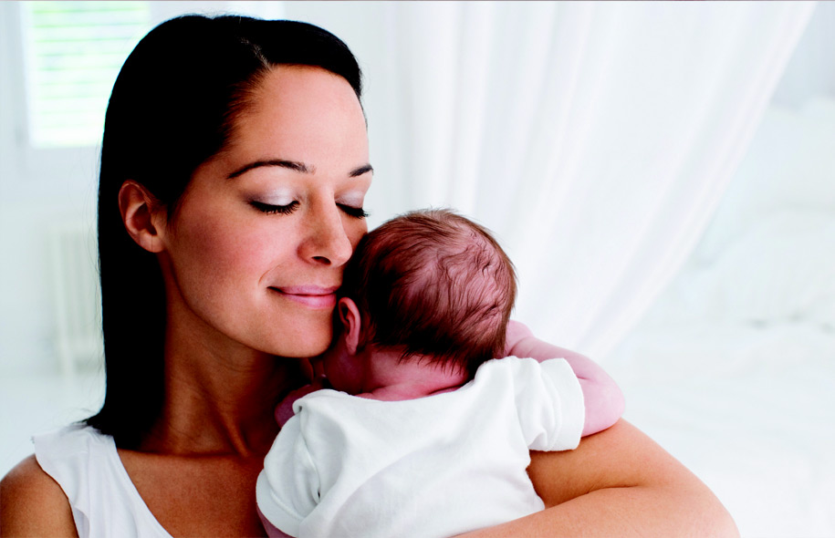

Nurturing care for drug-dependent newborns and their mothers.
501(c)3 EIN: 82-4916091

What if this

And this

Could be this?
Our Programs
Phoenix Program
Private rooms in a comfortable, home-like environment will allow withdrawing babies and their mothers to remain together. Mom is supervised, supported and educated as she cares for her baby through his withdrawal and continues with her own chemical dependency treatment while living at Maddie’s Place.
Nursery
When mom is not able to room-in, our carefully designed nursery will provide 24/7 secure, evidence-based, nurturing care for newborns suffering from withdrawal. And their mothers will be supported and encouraged to be the primary caregiver during the day.
Follow-up Care
Through partnerships with local pediatric therapy groups, every baby discharged from Maddie’s Place will be provided with Occupational, Physical, Speech and Feeding Therapy as needed over the first year.
Why We Do It
Infants born with prenatal exposure to opioids experience symptoms of withdrawal, or Neonatal Abstinence Syndrome (NAS). These babies are frequently admitted to hospital nurseries, while their mothers are discharged feeling judged, guilty and hopeless. Current research shows that mom is the “best medicine” for NAS babies, and that long term outcomes improve for both of them if they are kept together in the postpartum period. In addition, skilled, individualized care provided in a low-stimulus environment reduces the length of stay, the need for additional narcotic exposure and the cost of treatment for these babies by nearly 75%.
How You Can Help
Volunteer
We need a village of volunteers to keep Maddie’s Place running smoothly and to provide the very best care for our moms and babies!
CARE-GIVING
LAUNDRY
HOUSEKEEPING
DRIVERS
PLUMBING/ELECTRICAL
GROUNDS MAINTENANCE
SNOW REMOVAL
WINDOW WASHING
IT SUPPORT
ADMINISTRATIVE ASSISTANCE
Donate
Monetary
We are a 501(c)(3) non-profit.
Supplies
We will need steady provision of basic supplies such as diapers, wipes, bedding and clothing, and healthy food for our mothers.
Host a Baby Shower
A “Maddie’s Place Baby Shower” in which all gifts and donations provide much needed supplies to help care for the babies!
Check our website and babylist.com/maddiesplace for a current list of items.